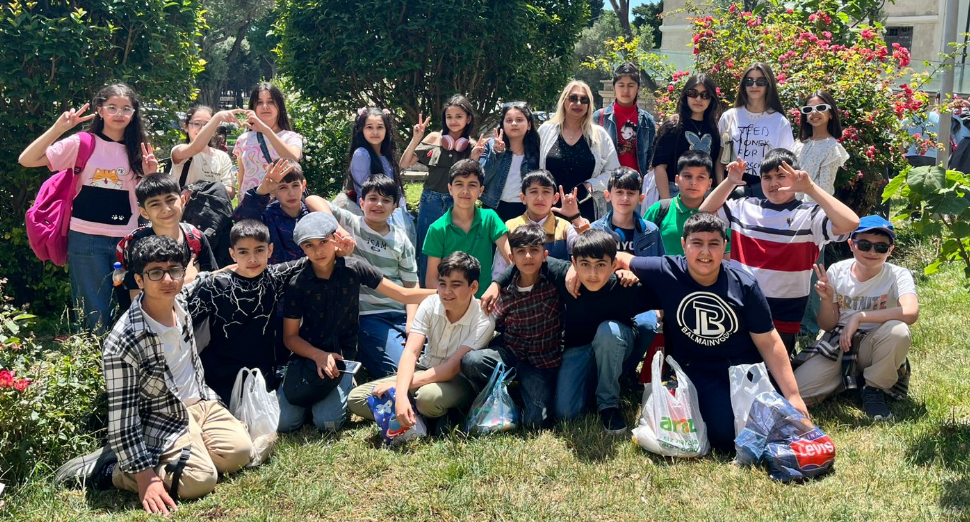
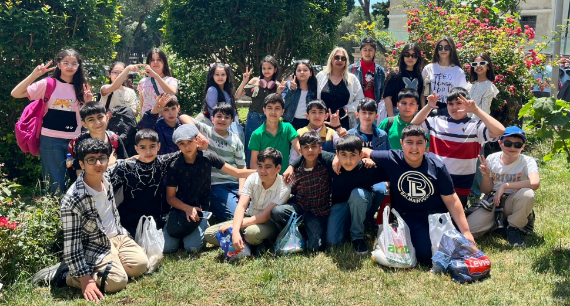

Xoş Gəlmisiniz!
Bu sayt 6C sinifi üçün yaradılıb. Burada sinif haqqında məlumatlar, şəkillər və digər faydalı məlumatlar yerləşəcək.
Salam uşaqlar bilmirəm bu saytı görəcəksiniz yoxsa yox amma mən 6c sinifi üçün yəni bizim sinif üçün sayt yığdım məqsədim ondan ibarət idi ki sentyabırdan indiki momentə qədər bütün xatirələrimizi yenidən yadımıza salaq bu saytı öz əllərimlə yığdım inşAllah sizində ürəyinizcə olar əgər gələn il yanımızda olsaz bu dəfədə 7c sinifi üçün sayt yığacam indiki vaxtda hamınıza uğurlar arzuluyuram 😃
2012 — Proqramist

2013 — Futbolçu
2013 — Sorry

2013 — Həkim
2013 — İdmançı

2013 —

Vəzifə: Müəllim
Fənn: Cəbr, Həndəsə, Riyaziyyat
Bitirdiyi təhsil müəssisəsi: BDU
Təvəllüd: 16.11.1966
İlk fəaliyyət ili: 06.09.1993
Bu sayt 6C sinifi üçün yaradılıb. Burada sinif haqqında məlumatlar, şəkillər və digər faydalı məlumatlar yerləşəcək.

 

"Mən proqramçı olacam, amma dərsi sabah oxuyaram" — Yusif
"Müəllim, ev tapşırığı evdə qaldı" — Kənan
"Kim dedi futbola dərsdən sonra baxmaq olmaz?" — Elçin
Əgər saytla bağlı fikirləriniz varsa Yusifə bildirin 😊